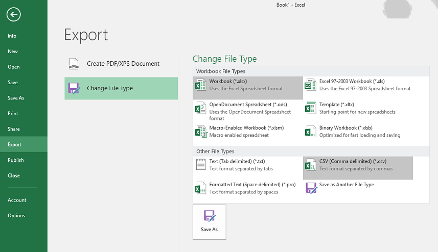
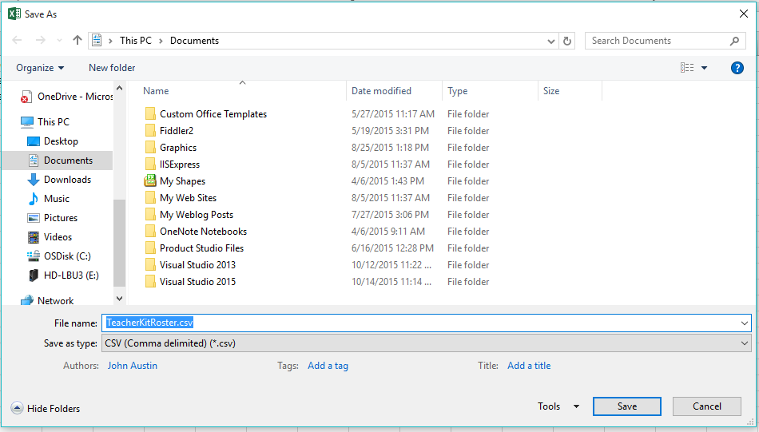
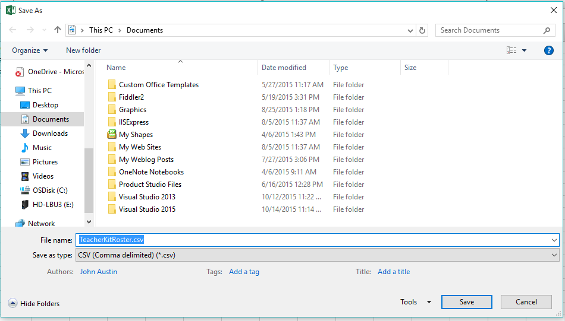

CSV Generator for Teachers - Excel Export Hints
To export your roster, use Excel's export feature to convert the roster table to a comma separated value (CSV) file and save it. After you save the file, you can import the CSV file to the service of your choice.
- Click "File" on the Excel menu. The Info page opens.
- Click "Export" on the left side command list to open the Export page.
- Under the Export header, click "Change file type"
- Under Other FileTypes, click CSV (Comma delimited)
- Click "Save as" and give your .csv file a name and a save location


